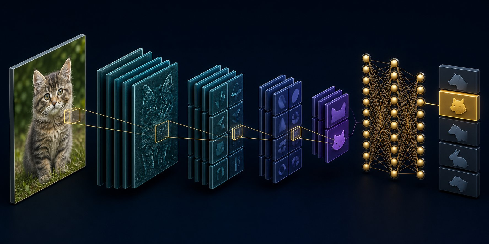

Deep learning: CNNs, RNNs & vision
Special architectures encode inductive bias: images are local and translation-tolerant; sequences are ordered.

Figure 11.1 — Convolution builds a hierarchy: edges → parts → objects, while shrinking spatial size.
Convolutional neural networks
A convolution slides a small filter (3×3, 5×5) across the image. The same weights detect a pattern everywhere — weight sharing. Stacking convolutions + ReLU + pooling (or stride) grows the receptive field.
- Early layers — edges, colour blobs.
- Middle — textures, parts (eyes, wheels).
- Late — object-level features; then a linear classifier.
Modern vision: ResNet (skip connections so 50–150 layers train), then Vision Transformers (ViT) that treat image patches like tokens. Detection (YOLO, Faster R-CNN) and segmentation (U-Net, Mask R-CNN) add localisation heads.
Sequence models before Transformers
RNNs feed the previous hidden state with the next token. They struggle with long memory. LSTM / GRU add gates that learn what to remember. They still process tokens mostly in order, which limits GPU parallelism. That bottleneck is why Transformers took over NLP (next chapter) — but LSTM intuition (gates, vanishing memory) is still worth having.
Transfer learning
Pretrain on a huge dataset (ImageNet, web images), then fine-tune the last layers on your 500 medical photos. You reuse generic visual features. This is the practical default — training a CNN from scratch on a small set overfits immediately.
Worked idea — data augmentation
Flip, crop, colour jitter, mixup. The label stays the same (usually), so the model learns invariances instead of memorising background hospital stickers. Augmentation is a regulariser made of extra fake data.
Short notes
CNNs exploit local spatial structure via shared filters. Depth + pooling builds a feature hierarchy. ResNets add skip paths. RNNs/LSTMs model sequences with state but are slow and forgetful compared with Transformers. Transfer learning is how small-data vision actually works. Detection/segmentation are classification plus where.
Point notes
- Convolution = shared local filters.
- Receptive field grows with depth/stride.
- ResNet skips fix degradation/vanishing grads.
- LSTM gates memory; Transformer later replaced them for NLP.
- Fine-tune pretrained nets on small data.
MCQs
4 questions1. Weight sharing in a CNN means:
2. Residual (skip) connections primarily help by:
3. For 300 labelled bird photos, the most sensible start is:
4. LSTMs were designed to address:
Practice questions
P1. Why is a fully connected net a bad default on 224×224 RGB images compared with a CNN?
Flattened input is 224×224×3 ≈ 150k features. A dense layer to 1000 units is ~150 million weights already, with no notion that nearby pixels belong together or that a cat in the corner is still a cat. CNNs use tiny shared filters (dozens of parameters per filter) and built-in locality/translation structure, so they generalise with far less data.
P2. A detector boxes cars well by day and fails at night. Name two likely causes and two mitigations.
Causes: train data is daytime; appearance shift (headlights, low SNR); different camera ISP. Mitigations: night images in train/val; colour jitter / brightness augment; domain-adaptive fine-tune; infrared or better exposure; monitor per-condition metrics, not a single mAP.